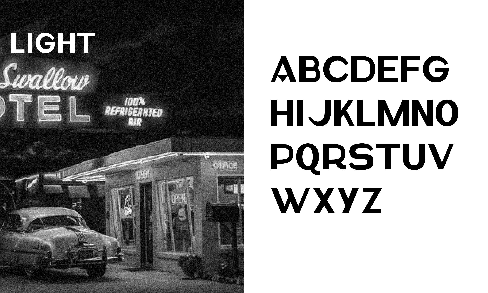
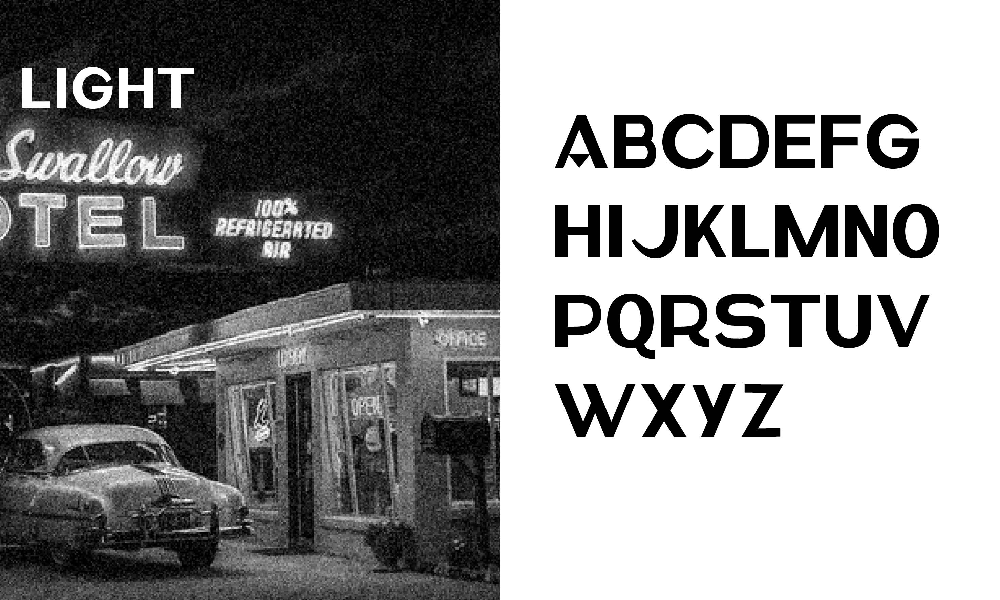

INFOS
INFOS
INFOS
INFOS
08_FÊTE_DE_LA_MUSIQUE
Design d'identité - Évènement
Réalisation d'une identité pour la fête de la musique
Conception d'une font typographique et d'un spécimen à partir du logo de fargo sur le logiciel Glyph. Cette typographie cherche à s'ancrer dans un univers vieux américain, tel que la route 66
 
